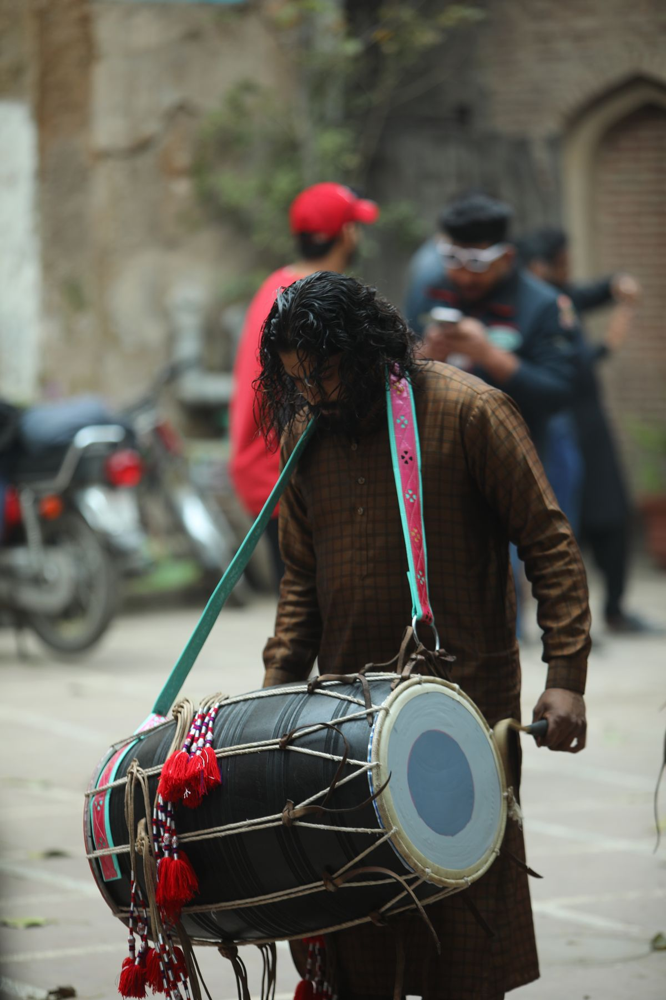
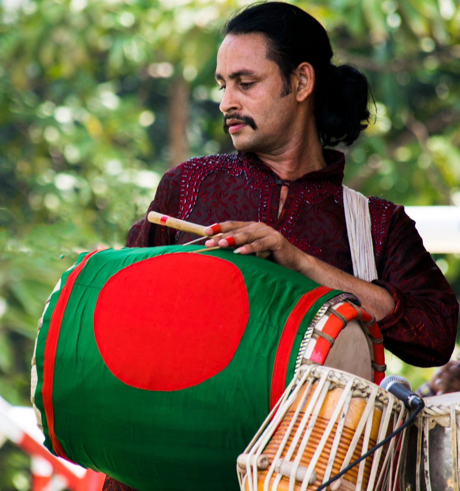

The player
Eleven years old, a borrowed drum
I started at eleven on my uncle’s spare dhol — a rope-tensioned drum older than me, kept in the front room in Smethwick and brought out for every family function whether anyone asked or not. He taught the way the folk patterns are taught: bols spoken first, hands second. Ge for the bass side, Na for the treble, Ka for the rim — you can hear all three in the pattern player. If you can say the cycle, you can play it; if you can’t say it, your hands are guessing.
By sixteen I was the spare player at family weddings, which is the real apprenticeship in this trade: baraats in the rain, uncles requesting songs mid-procession, aunties with strong views on tempo. I turned professional in 2009 and I’ve played the UK Asian wedding circuit ever since — Birmingham based, working the Midlands most weekends and further out when the date is right.
The thing sixteen years teaches you is that nobody remembers whether the drum sounded good in the abstract. They remember whether the baraat arrived when the photographer was ready, whether the couple’s entrance made the room stand up, and whether the last set ended the night or just stopped. The playing is table stakes. The timing is the job.

Set structures, by event
| Event | Arrival | Sets | Typical finish |
|---|---|---|---|
| Wedding day | 90 min before baraat | Baraat 45 · entrance 10 · dancefloor 40 + 35 | With the DJ’s close |
| Evening reception | 60 min before doors | Entrance 10 · dancefloor 40 + 35 | Last set ends the night |
| Sangeet / mehndi | 60 min before guests | Dinner 45 · dancefloor 40 | Earlier, family pace |
| Corporate / Diwali | Soundcheck with venue | 3 × 25, fitted to speeches | 30 min before curfew |
Every booking gets this sheet with real clock times once the date is confirmed — the same format as the planner on the home page, filled in for your evening and shared with your DJ and planner so all three of us are reading the same page.
The kit — and when a mic helps

The drums. Two dhols travel to every booking — a drum with a split head and no backup is a cancelled entrance. The main drum is rope-tensioned in the traditional way, mango-wood shell, goatskin on the bass side for warmth and a synthetic treble head, because British weather and goatskin have an understanding that does not include October weddings.
The sticks. A curved dagga for the bass hand and a thin tili for the treble. Spares of both, plus ropes, wax and a full tool roll — a dhol is tuned with rope tension, and a drum that can’t be tuned in the room doesn’t get played in the room.
Amplification, honestly. A dhol does not need a microphone in most rooms, and in small rooms a mic actively hurts — it feeds the PA the one sound that is already loudest. The policy: no mic indoors under 150 guests; outdoors, or in halls over 150, a single mic on the bass side, set at soundcheck with the DJ, never during the evening. If a venue insists on mic’ing the drum through a limiter, we talk at the site visit, not at the soundcheck with guests arriving.
Noise & venues — stated plainly
A dhol is loud. At the drum it peaks around 110 dB; at ten metres in a hall it’s party level; at the front table it ends conversation. That is the product — and it is managed, not apologised for:
- Limiters: if your venue has one, tell me at enquiry. Sets get timed and weighted early, as in Case 02.
- Curfews: the last set is planned to end 30 minutes before the venue’s curfew. The drum never finishes an evening by being stopped.
- Seating: grandparents and babies do not sit at the table nearest the drum. I’ll say it at the site visit so nobody has to learn it at the entrance.
- Outdoors: baraats move, so the noise moves with them — routes are walked in advance and neighbours on tight streets get the short version, not the finale.
Booking terms
- Deposit: 25% holds the date. The date is not held without it — one drum, one evening, no double-booking, ever.
- Balance: due 7 days before the event, so nobody is doing bank transfers in a wedding outfit.
- Cancellation: over 60 days out, the deposit returns less a £50 admin fee; 30–60 days, 50% of the fee; under 30 days, the full fee — the date was held and other work turned away.
- Arrival: 90 minutes before the first cue, every time. Soundcheck and cue rehearsal with the DJ happen then, not during your drinks reception.
- Cover: public liability insurance held; all electrical kit PAT-tested; certificates sent to venues on request.
- If I’m ill: it has happened twice in sixteen years. Both times a named deputy from my own circuit played the sheet as written, and both clients were told before they could worry.